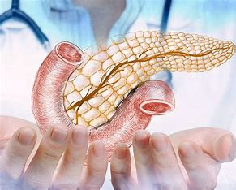
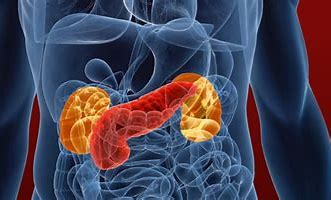
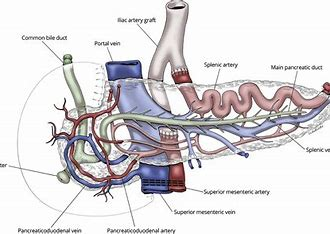
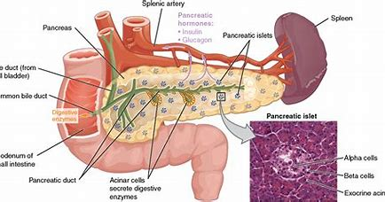
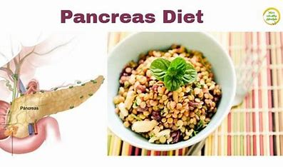

LUNGS TRANSPLANATION

A pancreas transplant is a surgical procedure to place a healthy pancreas from a deceased donor into a person whose pancreas no longer functions properly.
The pancreas is an organ that lies behind the lower part of the stomach. One of its main functions is to make insulin, a hormone that regulates the absorption of sugar into cells.
If the pancreas doesn't make enough insulin, blood sugar levels can rise to unhealthy levels, resulting in type 1 diabetes.
Most pancreas transplants are done to treat type 1 diabetes. A pancreas transplant offers a potential cure for this condition. But it's typically reserved for those with serious complications of diabetes because the side effects of a pancreas transplant can be significant.
In some cases, pancreas transplants may also treat type 2 diabetes. Rarely, pancreas transplants may be used in the treatment of pancreatic cancer, bile duct cancer or other cancers.
A pancreas transplant is often done in conjunction with a kidney transplant in people whose kidneys have been damaged by diabetes.
Products & Services
A Book: Mayo Clinic Family Health Book, 5th Edition
Show more products from Mayo Clinic
Why it's done
A pancreas transplant can restore insulin production and improve blood sugar control in people with diabetes, but it's not a standard treatment. The side effects of the anti-rejection medications required after a pancreas transplant can often be serious.
Doctors may consider a pancreas transplant for people with any of the following:
Type 1 diabetes that cannot be controlled with standard treatment
Frequent insulin reactions
Consistently poor blood sugar control
Severe kidney damage
Type 2 diabetes associated with both low insulin resistance and low insulin production
A pancreas transplant usually isn't a treatment option for people with type 2 diabetes. That's because type 2 diabetes occurs when the body becomes resistant to insulin or unable to use it properly, rather than due to a problem with insulin production by the pancreas.
However, for some people with type 2 diabetes who have both low insulin resistance and low insulin production, a pancreas transplant may be a treatment option. About 15% of all pancreas transplants are performed in people with type 2 diabetes.
There are several different types of pancreas transplants, including:
Pancreas transplant alone.
3>People with diabetes and early or no kidney disease may be candidates for a pancreas transplant alone. A pancreas transplant surgery involves the placement of a healthy pancreas into a recipient whose pancreas is no longer functioning properly.
Combined kidney-pancreas transplant.
Surgeons often may perform combined (simultaneous) kidney-pancreas transplants for people with diabetes who have or are at risk of kidney failure. Most pancreas transplants are done at the same time as a kidney transplant.
The goal of this approach is to give you a healthy kidney and pancreas that are unlikely to contribute to diabetes-related kidney damage in the future.
Pancreas-after-kidney transplant.
For those facing a long wait for both a donor kidney and a donor pancreas to become available, a kidney transplant may be recommended first if a living- or deceased-donor kidney becomes available.
After you recover from kidney transplant surgery, you'll receive a pancreas transplant once a donor pancreas becomes available.
Pancreatic islet cell transplant. During pancreatic islet cell transplantation, insulin-producing cells (islet cells) taken from a deceased donor's pancreas are injected into a vein that takes blood to your liver. More than one injection of transplanted islet cells may be needed.
Islet cell transplantation is being studied for people with serious, progressive complications from type 1 diabetes. It may only be performed as part of a Food and Drug Administration-approved clinical trial.
Risks
Complications of the procedure

, Pancreas transplant surgery carries a risk of significant complications, including:
Blood clots
Bleeding
Infection
Excess sugar in the blood or other metabolic problems
Urinary complications, including leaking or urinary tract infections
Failure of the donated pancreas
Rejection of the donated pancreas
Anti-rejection medication side effects
After a pancreas transplant, you'll take medications for the rest of your life to help prevent your body from rejecting the donor pancreas. These anti-rejection medications can cause a variety of side effects, including:
Bone thinning
High cholesterol
High blood pressure
Nausea, diarrhea or vomiting
Sensitivity to sunlight
Other side effects may include:
Puffiness
Weight gain
Swollen gums
Acne
Excessive hair growth or loss
Anti-rejection drugs work by suppressing your immune system. These drugs also make it harder for your body to defend itself against infection and disease.
How you prepare
Choosing a transplant center

If your doctor recommends a pancreas transplant, you'll be referred to a transplant center. You're also free to select a transplant center on your own or choose a center from your insurance company's list of preferred providers.
When you consider transplant centers, you may want to:
Learn about the number and type of transplants the center performs each year
Ask about the transplant center's organ donor and recipient survival rates
Compare transplant center statistics through the database maintained by the Scientific Registry of Transplant Recipients
Consider other services provided by the transplant center, such as support groups, travel arrangements, local housing for your recovery period and referrals to other resources
After you've selected a transplant center, you'll need an evaluation to determine whether you meet the center's eligibility requirements.
When the transplant team assesses your eligibility, they'll consider the following:
Are you healthy enough to have surgery and tolerate lifelong post-transplant medications?
Do you have any medical conditions that would hinder the success of the transplant?
Are you willing and able to take medications and follow the recommendations of the transplant team?
If you need a kidney transplant, too, the transplant team will determine whether it's better for you to have the pancreas and kidney transplants during the same surgery, or to have the kidney transplant first, followed by the pancreas transplant later. The option that's right for you depends on the severity of your kidney damage, the availability of donors and your preference.
Once you've been accepted as a candidate for a pancreas transplant, your name will be placed on a national list of people awaiting a transplant. The waiting time depends on your blood group and how long it takes for a suitable donor — one whose blood and tissue types match yours — to become available.
The average wait for a pancreas transplant is about 20 months. The average wait for a simultaneous kidney-pancreas transplant is about 14 months.
Staying healthy

Results
After a successful pancreas transplant, your new pancreas will make the insulin your body needs, so you'll no longer need insulin therapy to treat type 1 diabetes.
But even with the best possible match between you and the donor, your immune system will try to reject your new pancreas.
To avoid rejection, you'll need anti-rejection medications to suppress your immune system. You'll likely take these drugs for the rest of your life. Because medications to suppress your immune system make your body more vulnerable to infection, your doctor may also prescribe antibacterial, antiviral and antifungal medications.
Signs and symptoms that your body might be rejecting your new pancreas include:
Belly pain
Fever
Excessive tenderness at the transplant site
Increased blood sugar levels
Vomiting
Decreased urination
If you experience any of these symptoms, notify your transplant team immediately.
It's not unusual for pancreas transplant recipients to experience an acute rejection episode within the first few months after the procedure. If you do, you'll need to return to the hospital for treatment with intensive anti-rejection medications.
Pancreas transplant animation
In a pancreas transplant, the donor pancreas is attached to the small intestine with a portion of the donor's small intestine. Once the new donor pancreas is in place, it replaces the function of the diseases pancreas by releasing insulin and other enzymes into the gastrointestinal tract.
Pancreas transplant survival rates
Survival rates vary by procedure type and transplant center. The Scientific Registry of Transplant Recipients maintains current statistics regarding transplantation for all U.S. transplant centers.
Pancreas rejection rates tend to be slightly higher among pancreas-only transplant recipients. It's unclear why results are better for those who receive a kidney and pancreas at the same time. Some research suggests that it may be because it's more difficult to monitor and detect rejection of a pancreas alone versus a pancreas and a kidney.
If your new pancreas fails, you can resume insulin treatments and consider a second transplant. This decision will depend on your current health, your ability to withstand surgery and your expectations for maintaining a certain quality of life.
Clinical trials
Explore Mayo Clinic studies of tests and procedures to help prevent, detect, treat or manage conditions.
Coping and Support
You may feel anxious or overwhelmed while waiting for a transplant. Or you may have concerns about rejection, returning to work or other issues after a transplant. Seeking the support of friends and family members can help you cope during this time.
Your transplant team can also assist you with other useful resources and coping strategies throughout the transplant process. You might:
Join a support group for transplant recipients. Talking with others who have shared your experience can ease concerns and anxiety.
Share your experiences on social media. Engaging with others who have had a similar experience may help you adjust to your changing situation.
Find rehabilitation services. If you're returning to work, your social worker may be able to connect you with rehabilitation services provided by your home state's department of vocational rehabilitation.
Set realistic goals and expectations. Recognize that life after transplant may not be exactly the same as life before transplant. Having realistic expectations about results and recovery time can help reduce stress.
Educate yourself. Learn as much as you can about your procedure and ask questions about things you don't understand. Knowledge is empowering.
New medication options
Researchers actively study medications and treatments for people with pancreas transplants. Current research includes comparing and developing new anti-rejection medication (immunosuppressive) regimens to keep your body from rejecting your new pancreas.
For example, researchers are investigating ways to personalize immunosuppression maintenance regimens by using immune system monitoring.
They also study the possibility of lowering the dose of immunosuppressive medications, such as calcineurin inhibitors, to reduce side effects.
Diet and nutrition

After your pancreas transplant, you may need to adjust your diet to keep your pancreas healthy and functioning well. Maintaining a healthy weight through diet and exercise can help prevent many common post-transplant complications, including infection, heart attacks and bone thinning.
Your transplant team typically includes a nutrition specialist (dietitian) who can discuss your nutrition and diet needs and answer any questions you have after your transplant.
Your dietitian can provide you with several healthy food options and ideas to use in your nutrition plan.